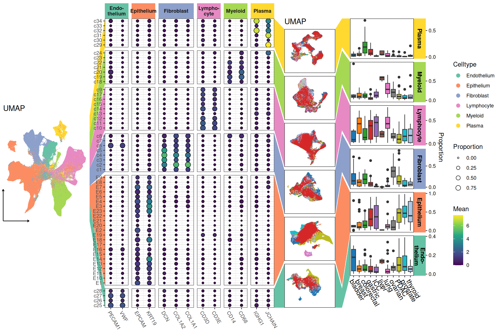

ggheatmap()
ggmark()
Pan-cancer analysis of cell type distribution and abundance at single-cell resolution
The raw data were obtained from https://www.ncbi.nlm.nih.gov/geo/query/acc.cgi?acc=GSE210347. A detailed description of the preprocessing workflow can be found here: https://github.com/Yunuuuu/ggalign-research/blob/main/Figure%206-data-preprocess.qmd. The processed dataset can be downloaded from Data Repository.
Load processed data
Helper: truncated axis guide
The following function creates an axis guide that optionally truncates at the lower and/or upper ends:
guide_axis_trunc <- function(lower = NULL, upper = NULL) {
if (is.null(lower) && is.null(upper)) {
return(ggplot2::guide_axis(cap = "both"))
}
ggplot2::ggproto(
NULL,
ggplot2::guide_axis(),
build_decor = function(self, decor, grobs, elements, params) {
if (ggplot2:::empty(decor)) {
return(ggplot2::zeroGrob())
}
if (!is.null(lower)) {
decor[[params$aesthetic]][1L] <- as.numeric(lower)
}
if (!is.null(upper)) {
decor[[params$aesthetic]][2L] <- as.numeric(upper)
}
ggplot2::element_grob(
elements$line,
x = grid::unit(decor$x, "npc"),
y = grid::unit(decor$y, "npc")
)
}
)
}Visualization pipeline
ggheatmap(summarized$num, filling = FALSE) -
# main plot
scheme_data(function(data) {
data$average <- summarized$ave[cbind(data$.row_index, data$.column_index)]
data
}) +
geom_point(aes(fill = average, size = value), shape = 21) +
scale_fill_viridis_c(name = "Mean") +
scale_size_continuous(name = "Proportion", range = c(1, 4)) +
theme_bw() +
theme(
axis.text.x = element_text(angle = -60, hjust = 0),
strip.text.y.right = element_blank(),
plot.margin = margin(),
strip.background = element_rect(colour = NA),
strip.text = element_text(face = "bold")
) +
ggh4x::facet_grid2(
strip = ggh4x::strip_themed(
clip = "off",
background_x = ggh4x::elem_list_rect(
fill = RColorBrewer::brewer.pal(6, "Set2"),
colour = NA
)
),
labeller = labeller(
.panel_x = function(x) {
x[x == "Endothelium"] <- "Endo-\nthelium"
x[x == "Lymphocyte"] <- "Lympho-\ncyte"
x
}
)
) +
scheme_align(free_spaces = "l") +
# top
anno_top() +
align_group(summarized$column_grp) +
# right
anno_right() +
align_group(summarized$row_grp) +
# left -----------------------------------------
anno_left(size = 0.6) +
ggmark(
# define how to draw the links
mark_draw(function(panel, link) {
dist <- (panel$yend - panel$y) / nlevels(link$link_panel)
link_list <- split(link, link$link_panel)
ans <- vector("list", length(link_list))
for (i in seq_along(link_list)) {
dd <- .subset2(link_list, i)
ans[[i]] <- data.frame(
x = c(
panel$x, panel$xend,
max(dd$xend), min(dd$x)
),
y = c(
panel$y + dist * (i - 1L),
panel$y + dist * i,
max(dd$yend), min(dd$y)
)
)
}
ans <- dplyr::bind_rows(ans)
element_grob(
element_polygon(
fill = RColorBrewer::brewer.pal(6, "Set2"),
color = NA,
linewidth = 0.5,
linetype = 1,
alpha = NA,
lineend = "butt",
linejoin = "round",
linemitre = 10
),
x = ans$x, y = ans$y,
id.lengths = vctrs::vec_rep(4L, nrow(ans) / 4L),
default.units = "native"
)
}, ~ seq_len(nrow(summarized$num))),
mapping = aes(umap1, umap2)
) +
scheme_data(function(data) umap) +
ggrastr::geom_point_rast(aes(color = celltype), size = 0, shape = 16) +
scale_color_brewer(
name = "Celltype", palette = "Set2",
guide = guide_legend(override.aes = list(size = 3))
) +
ggtitle("UMAP") +
scale_x_continuous(breaks = -10) +
scale_y_continuous(breaks = -10) +
guides(
x = guide_axis_trunc(upper = 0.3),
y = guide_axis_trunc(upper = 0.3)
) +
theme_no_axes() +
theme(
plot.margin = margin(t = 0.3, b = 0.3, r = 0.15, unit = "npc"),
panel.border = element_blank(),
axis.line = element_line(arrow = grid::arrow(length = unit(0.05, "inches")))
) +
# right -----------------------------------------
# umap plot
anno_right() +
ggmark(
mark_tetragon(
.element = element_vec_rep_each(
element_polygon(
fill = RColorBrewer::brewer.pal(6, "Set2"),
colour = NA
),
2L
)
),
data = NULL, mapping = aes(umap1, umap2),
group1 = TRUE, group2 = TRUE
) +
scheme_data(function(data) {
ans <- umap_subset
ans$.panel <- factor(ans$.panel, levels(data$.panel))
ans
}) +
ggrastr::geom_point_rast(aes(color = tissue), size = 0, shape = 16) +
ggsci::scale_color_d3(palette = "category20", guide = "none") +
theme_no_axes() +
theme(
plot.margin = margin(l = 0.15, r = 0.1, unit = "npc"),
strip.text = element_blank(),
strip.background = element_blank()
) +
ggtitle("UMAP") +
# box plot
ggmark(mark_tetragon(.element = element_polygon(
fill = RColorBrewer::brewer.pal(6, "Set2"),
colour = NA
)), size = 1.5) +
scheme_data(function(data) {
ans <- clidata
ans$celltype <- factor(ans$celltype, levels = levels(data$.panel))
ans <- dplyr::summarise(
ans,
n = dplyr::n(),
.by = c(tissue, SampleID, celltype)
)
ans <- dplyr::mutate(ans,
prop = n / sum(n),
.by = c(tissue, SampleID)
)
ans$.panel <- ans$celltype
ans
}) +
geom_boxplot(aes(tissue, prop, fill = tissue)) +
ggsci::scale_fill_d3(palette = "category20", guide = "none") +
scale_y_continuous(position = "right", breaks = scales::pretty_breaks(2)) +
xlab(NULL) +
ylab("Proportion") +
theme(
plot.margin = margin(l = 0.08, unit = "npc"),
axis.text.x = element_text(angle = -60, hjust = 0, size = 12),
strip.clip = "off",
strip.text = element_text(size = 10, face = "bold"),
strip.background = element_rect(color = NA)
) +
ggh4x::facet_grid2(
scales = "free_y",
strip = ggh4x::strip_themed(
clip = "off",
background_y = ggh4x::elem_list_rect(
fill = rev(RColorBrewer::brewer.pal(6, "Set2"))
)
),
labeller = labeller(
.panel = function(x) {
x[x == "Endothelium"] <- "Endo-\nthelium"
x
}
)
)